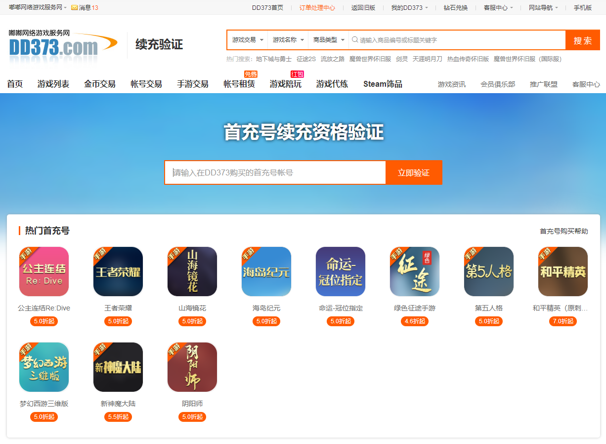
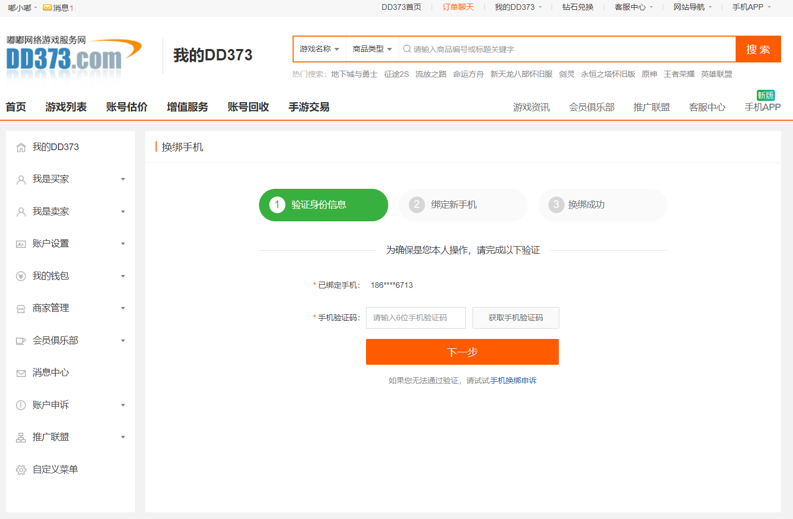

用 DD373 快一年了，我把它从"偶尔用"改成了"优先用"
从第一次买首充号的半信半疑，到现在续充、发货、售后全走 DD373，聊聊这大半年里它哪里让我越来越顺手、哪里又时不时让人挠头。
当初为什么装它
去年下半年朋友在一款手游里提了一嘴，说 DD373官网 上能拿到首充号，续充还能一直打折。我那时候正被某款 MMO 的氪金节奏搞得有点疲惫——每玩一个新服就要重新充一次首充，算下来一年花在首充上的钱比月卡还多。抱着试试看的心态从 DD373下载 页面注册了账号，绑了手机，第一次下单就买了个首充号。
说句实在话，第一次付完款我挺紧张的。钱转出去了，号能不能拿到？会不会被找回？平台会不会不管？这些念头在脑子里转了好几天。事实是号没被找回，后续续充也一直正常，这份信任感大概就是从那一刻攒下的。
哪点越用越顺手
收银台那套"只认平台"的规矩，我现在觉得是真良心。 刚用的时候觉得它太死板——聊天记录里别人发的任何付款链接都不让点，客服也绝对不给二维码。有次差点被一个卖家骗了，他说平台收银台"卡单了"，让我走他发的微信链接付。那一刻我才反应过来，DD373 那堆看起来啰嗦的支付守则，不是在限制我，是在替我挡雷。现在我付款根本不看聊天窗口，直接从订单页跳收银台，扫完码回订单页确认状态变了再往下走，整套动作肌肉记忆了。
发货录像留证这件事，从"多此一举"变成了"救命稻草"。 前几次卖金币，我觉得录屏太麻烦，只截了几张关键图。有一次买家说没收到货，我那几张截图说不清是哪次交易截的，仲裁差点输了。后来老老实实从登录那一刻开始录，录完按订单号命名存本地。上个月又遇到一个故意说没收到的，我把录像传上去，客服十分钟就判我赢。现在录屏发货已经变成了习惯，反正是按订单号存，也不占地方。
续充资格验证那个页面，我大概点了不下二十次。 一开始每买一个首充号都要手动点进去验证一下能不能续充，现在知道它会自动跳，但还是忍不住确认一遍——毕竟续充折扣能省不少钱。

哪点越用越烦
验证码偶尔收不到的问题，到现在也没彻底解决。 换绑手机那次等了二十分钟没收到短信，差点以为自己号没了。后来去 DD373文档 翻了一下才知道有申诉通道，但申诉要提交的材料挺多的——手持身份证照片、注册信息、充值记录，一套下来至少半小时。平时用还好，赶上交易中要换绑就特别糟心。平台说短信通道有时候会拥堵，但作为用户你没法判断是真拥堵还是号出问题了，那种不确定感很让人焦虑。
不同游戏的续充折扣浮动有点大。 我同时玩三款游戏，同款面值在 A 游戏能到五折，在 B 游戏是七折，C 游戏有时候甚至不支持续充。页面上写的是"以实际显示为准"，这话本身没问题，但有时候前一天看还有续充选项，第二天就没了，也没个通知。我有次囤了续充面值结果第二天通道关了，只能等着恢复，钱卡在那儿干着急。
哪个功能成了每天离不开的
账户安全里的手机绑定入口，我现在是每新注册一个平台号就先绑。 DD373 的账户设置里那条"手机绑定 = 账户安全第一步"的提示，我以前觉得是口号，现在明白它是真的——登录异常提醒、大额操作验证、密码找回全靠这个。我还把游戏里的账号安全设置也改成了同样的优先级，先绑手机再玩。

哪个碰都没再碰
发货截图上传功能，自从那次仲裁之后就没再单用截图了。 录像能覆盖全过程，截图只是录像里的帧。但我发现有些老卖家还是只传截图，上传框里的截图零零散散好几张，时间线对不上，买家看了也懵。我给过一个朋友建议让他录屏发货，他嫌麻烦没听，后来真遇到纠纷吃亏了。
观感修正：当初高估了什么，低估了什么
高估了平台会不会主动保护我——其实它只保护守规矩的人。 刚用的时候觉得只要钱付出去了，平台就该全程兜底。绕开收银台付了钱被骗，平台根本管不了，这不是冷漠，是根本没法管。现在我理解了，平台给的是一套规则，守规则的人自动被保护，不守的人出了问题谁也帮不了。这不是平台好不好的问题，是担保交易的本质决定的。
低估了发货留证这件小事的重量。 以前觉得发货嘛，东西给出去就完了，拍什么照录什么像。直到真遇到纠纷才知道，没有证据你说什么都没用。平台判责完全看订单里有没有录像或截图，不是谁嗓门大谁就赢。
去留结论
短期内不会卸载。首充续充这条线我已经离不开了，每年能省的钱实实在在。但如果以后玩的游戏在 DD373 上续充通道全关，或者出现更方便的同类平台，我会果断换——毕竟我对平台没有忠诚度，只有对折扣和安全感的依赖。顺手说一句，我整理的 DD373 使用笔记分别放在了 GitHub、Gitee 和 GitCode，三个仓库同步更新，国内访问哪个顺手就看哪个。
一个信号：如果哪天它开始让我觉得"付款很麻烦"，或者又出现新的骗术而平台没及时更新规则，那大概就是该走的时候了。工具嘛，顺手就用，不顺手就换，没什么感情可言。